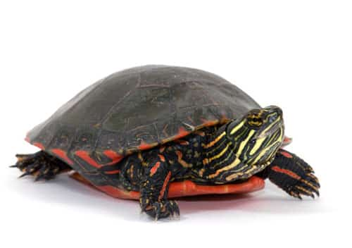
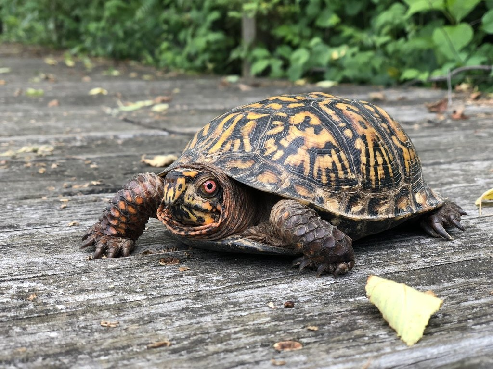
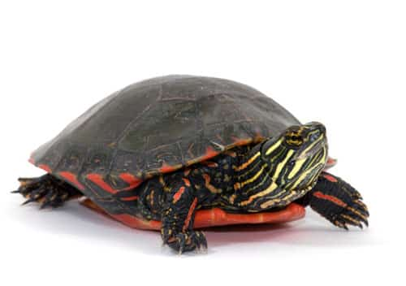
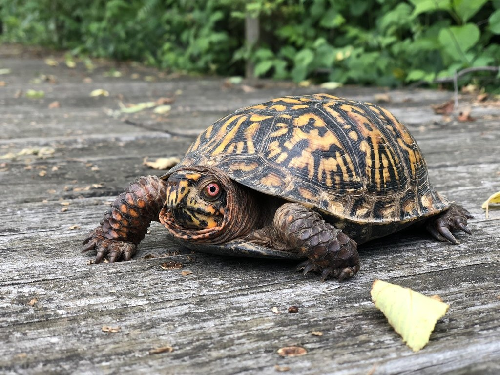

Shell-ebrate Slow and Steady: The Enchanting World of Turtle Pets
Turtles make intriguing and unique pets. With their ancient origins and distinctive appearance, these captivating creatures have been fascinating humans for centuries. As reptiles, turtles possess a remarkable ability to adapt to a variety of environments, making them adaptable companions for both novice and experienced pet owners.
One of the most intriguing aspects of turtle pets is their longevity. Many turtle species have remarkably long lifespans, with some individuals living well over several decades. This longevity allows for a deep and lasting bond between owners and their shelled friends, creating a lifetime of shared memories and experiences.
Turtles are known for their calm and steady nature, which can be incredibly soothing to have around the house. With their slow and deliberate movements, they bring a sense of tranquility and mindfulness to any environment. Observing their unhurried approach to life can remind us to slow down and appreciate the simple pleasures in our own lives.
Another fascinating aspect of turtle pets is their diverse range of species and sizes. From the tiny and adorable Eastern box turtle to the larger and majestic red-eared slider, there is a turtle to suit every preference and living situation. Each species has its own unique characteristics, from shell patterns and colors to specific habitat requirements, providing endless possibilities for turtle enthusiasts.
1.Red-Eared Slider
The red-eared slider is one of the most popular pet turtle species. They are known for their distinctive red stripe behind each eye and their ability to adapt to various environments, including both land and water.
2.Painted Turtle
Painted turtles are colorful and attractive turtles, often featuring vibrant yellow and red markings on their skin. They are native to North America and are well-suited to both indoor and outdoor enclosures.
3.Eastern Box Turtle
Eastern box turtles are small to medium-sized turtles known for their ornate shell patterns and colors. They are primarily terrestrial and require a mix of land and water in their enclosure.
4.Russian Tortoise
Although technically not a turtle, the Russian tortoise is a popular pet reptile. They have a domed shell and are known for their hardy nature and relatively small size compared to other tortoise species.
 



Interesting facts about red-eared slider
1.Distinctive Red Ears: Red-eared slider turtles get their name from the distinctive red or orange patches located behind each eye. These patches resemble ears and add a touch of vibrant color to their appearance.
2.Aquatic Lifestyle: Red-eared sliders are primarily aquatic turtles. They spend much of their time in the water, where they swim, bask, and hunt for food. They are excellent swimmers and have webbed feet to help them navigate through the water.
3.Wide Distribution: Red-eared sliders are native to parts of North America, including the southern United States and northern Mexico. However, due to their popularity as pets, they have been introduced to many other parts of the world and are considered an invasive species in some regions.
Interesting facts about painted turtle
1.Colorful Shell Patterns: Painted turtles, as their name suggests, have colorful shell patterns that resemble intricate artwork. Their shells feature a combination of yellow, red, and olive green markings, which make them visually appealing and unique among turtle species.
2.North American Natives: Painted turtles are native to North America and can be found across various parts of the continent, including Canada, the United States, and northern Mexico. They are commonly found in freshwater habitats such as ponds, lakes, and slow-moving rivers.
3.Longevity: Painted turtles have relatively long lifespans compared to many other turtle species. In the wild, they can live for several decades, and with proper care in captivity, they have been known to live for over 30 years or more.
Interesting facts about eastern box turtle
1.Native Habitat: Eastern box turtles (Terrapene carolina) are native to the eastern part of the United States. They can be found in a variety of habitats, including forests, grasslands, and wetlands.
2.Unique Shell: The Eastern box turtle has a domed shell that can vary in coloration from olive to brown or black. It is characterized by intricate patterns and bright yellow or orange markings on the shell.
3.Long Lifespan: Eastern box turtles are known for their long lifespans. In the wild, they can live for 30 to 40 years, and in captivity, they have been recorded to live over 100 years.
Interesting facts about russian tortoise
1.Native Habitat: Russian tortoises (Agrionemys horsfieldii), also known as Horsfield's tortoises or Central Asian tortoises, are native to the arid regions of Central Asia, including Russia, Iran, Afghanistan, and Pakistan.
2.Size and Appearance: Russian tortoises are small to medium-sized tortoises, with males growing to around 6 to 8 inches (15 to 20 cm) in length, and females being slightly larger. They have a high, domed shell that is typically brown or yellowish-brown in color.
3.Adaptations for Arid Environments: Russian tortoises are well adapted to the arid regions they inhabit. They have the ability to dig burrows to escape extreme temperatures and conserve moisture. They also have tough, scaly skin on their limbs that helps protect them from the hot desert sands.